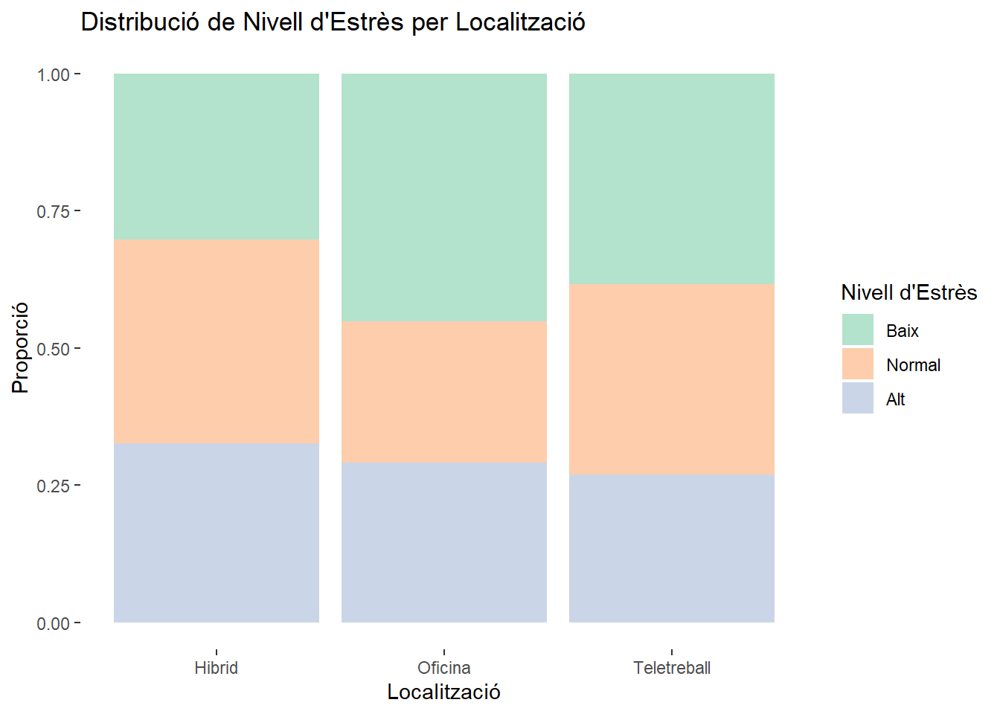
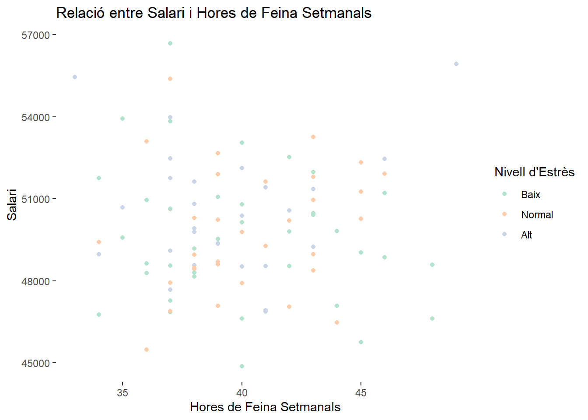
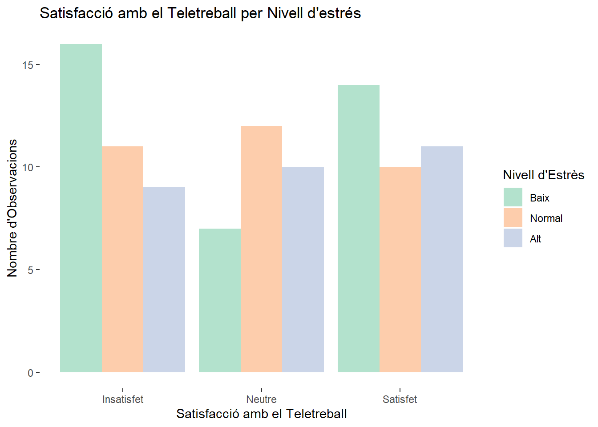

| Genere | Feina | Localitzacio | Edat | Anys_experiencia | Salari | Hores_feina_setmanals | Meetings_setmanals | Activitat_fisica | Qualitat_son | Nivell_estres | Satisfaccio_teletreball |
|---|---|---|---|---|---|---|---|---|---|---|---|
| Home | Suport | Oficina | 46 | 1 | 46934 | 41 | 6 | Diariament | Bona | Alt | Neutre |
| Home | Suport | Teletreball | 51 | 13 | 51263 | 45 | 5 | Setmanalment | Normal | Normal | Satisfet |
| No-Binari | Suport | Teletreball | 28 | 14 | 49188 | 38 | 5 | Diariament | Dolenta | Baix | Satisfet |
| Dona | Manager | Oficina | 51 | 21 | 48585 | 48 | 6 | Setmanalment | Normal | Baix | Insatisfet |
| Dona | Suport | Teletreball | 34 | 2 | 49096 | 37 | 4 | Diariament | Dolenta | Alt | Satisfet |
| Dona | Desenvolupador | Hibrid | 42 | 5 | 50237 | 39 | 4 | Diariament | Normal | Normal | Neutre |
La Influència del Teletreball en la Salut Mental
Taller avaluable - Anàlisis de Dades
Introducció
El teletreball ha esdevingut una pràctica molt popular en els darrers anys, impulsada especialment per la crisi sanitària derivada de la COVID-19. Durant el període de confinament, una de les poques opcions per mantenir l’activitat laboral va ser treballar des de casa, fet que va portar moltes empreses a implantar aquesta modalitat com a mesura de seguretat per als treballadors, assegurant així la continuïtat del negoci.
Ara que hem retornat a la normalitat, el teletreball es manté en diversos sectors, no tant per motius de seguretat sinó per la seva comoditat i flexibilitat. Tanmateix, sorgeix una pregunta fonamental: Quin impacte té el teletreball en la salut mental dels treballadors? És realment positiu o presenta desavantatges ocults?
Aquest estudi té com a objectiu principal explorar la relació entre el teletreball i els indicadors de salut mental, com ara l’estrès i la qualitat del son, així com comprendre si aquest impacte és similar en aquells que treballen de manera presencial o híbrida.
Dades
Dades Simulades
En aquest apartat, simulem una base de dades amb l’objectiu d’examinar la relació entre el teletreball i la salut mental. El conjunt de dades generat inclou 100 observacions i 12 variables dividides en tres categories: quantitatives, ordinals i nominals. Aquestes variables han estat escollides per cobrir diferents aspectes del perfil laboral i la salut dels participants, la qual cosa ens permetrà analitzar amb més precisió la hipòtesi plantejada.
Les variables proposades són les següents:
- Variables Nominals:
- Gènere: Identitat de gènere del treballador/a.
- Feina: Tipus de feina del treballador/a.
- Localització: Modalitat de treball (teletreball, oficina, o híbrid).
- Variables Quantitatives:
- Edat: Edat en anys.
- Anys d’experiència: Nombre d’anys d’experiència laboral.
- Salari: Salari anual en euros.
- Nombre d’hores de feina setmanals: Hores setmanals dedicades a la feina.
- Nombre de meetings setmanals: Nombre de reunions virtuals per setmana.
- Variables Ordinals:
- Activitat física: Freqüència amb la qual el treballador/a realitza activitat física (cap, setmanal, diària).
- Qualitat de son: Qualitat percebuda del son (bona, normal, dolenta).
- Nivell d’estrès: Nivell d’estrès percebut (baix, mitjà, alt).
- Satisfacció amb el teletreball: Grau de satisfacció amb el teletreball (insatisfet, neutre, satisfet).
A continuació, es presenta una mostra de les deu primeres observacions de les dades simulades:
Dades Extra
En aquest apartat, enriquiré les dades prèvies obtingudes amb informació addicional de fonts externes. He trobat una base de dades a la pàgina Kaggle anomenada Remote Work & Mental Health que complementarà el nostre anàlisi. Aquesta base de dades conté diversos registres rellevants (molts d’ells m’han inspirat per crear les variables anteriors) entre ells una variable ordinal anomenada productivity_change. Aquesta variable ens indica si la productivitat del treballador ha millorat o empitjorat com a resultat del teletreball.
Per integrar aquesta informació al nostre conjunt de dades, prendrem una mostra aleatòria de 100 observacions de la variable productivity_change i l’afegirem a la nostra base de dades.
| Genere | Feina | Localitzacio | Edat | Anys_experiencia | Salari | Hores_feina_setmanals | Meetings_setmanals | Activitat_fisica | Qualitat_son | Nivell_estres | Satisfaccio_teletreball | Canvi_productivitat |
|---|---|---|---|---|---|---|---|---|---|---|---|---|
| Home | Suport | Oficina | 46 | 1 | 46934 | 41 | 6 | Diariament | Bona | Alt | Neutre | Increase |
| Home | Suport | Teletreball | 51 | 13 | 51263 | 45 | 5 | Setmanalment | Normal | Normal | Satisfet | Decrease |
| No-Binari | Suport | Teletreball | 28 | 14 | 49188 | 38 | 5 | Diariament | Dolenta | Baix | Satisfet | Decrease |
| Dona | Manager | Oficina | 51 | 21 | 48585 | 48 | 6 | Setmanalment | Normal | Baix | Insatisfet | Increase |
| Dona | Suport | Teletreball | 34 | 2 | 49096 | 37 | 4 | Diariament | Dolenta | Alt | Satisfet | Decrease |
| Dona | Desenvolupador | Hibrid | 42 | 5 | 50237 | 39 | 4 | Diariament | Normal | Normal | Neutre | No Change |
Anàlisi descriptiu
En aquesta secció farem un anàlisi descriptiu de les dades d’acord amb els objectius que hem anomenat abans. Aquests eren veure la relació entre el teletreball i la salut mental, com ara l’estrés i la quaitat del sonaixí com comprendre si aquest impacte és similar en aquells que treballen de manera presencial o híbrida.
Distribució del nivell d’estrés per localització
Comprovem si la localització del lloc on es fa feina influeix en el nivell d’estrès dels treballadors.

Relació entre el salari i les hores de feina setmanals
És interessant veure si les hores de feina i el salari van lligades, pareix coherent exigir un salari major per més hores de feina. També ho podem relacionar amb el nivell d’estrés per veure si fer més hores provoca un major nivell d’estrés.

Influència de les hores treballades i la qualitat del son
Ens podem demanar si fer més hores de treball pot influir en la nostra qualitat de son. Moltes vegades, fer feina per damunt les nostres possibilitats dificulta tenir una bona salut de la son.
Satisfacció del teletreball per nivell d’estrès
Una altra opció és determinar la percepció que té la gent sobre el teletreball i el seu nivell d’estrès. Sovint les persones no sabem el que ens passa realment, i pot ser esteim molt agust fent teletreball però realment ens està causant estrés.

Altres gràfics per fer un anàlisi descriptiu multivariant
Podem fer una gràfica resum de totes les variables que hem tengut en compte per fer les gràfiques anteriors. Ho podem fer usant una matriu de dispersió, que ens és molt útil per trobar la correlació entre dues variables de les nostres dades.
data %>%
dplyr::select(Nivell_estres, Salari, Hores_feina_setmanals, Localitzacio, Qualitat_son, Satisfaccio_teletreball) %>%
ggpairs(.,
lower = list(continuous = wrap("points", color = "#F7D6C1")),
diag = list(continuous = wrap("densityDiag", fill = "#D1A7B8")))`stat_bin()` using `bins = 30`. Pick better value with `binwidth`.
`stat_bin()` using `bins = 30`. Pick better value with `binwidth`.
`stat_bin()` using `bins = 30`. Pick better value with `binwidth`.
`stat_bin()` using `bins = 30`. Pick better value with `binwidth`.
`stat_bin()` using `bins = 30`. Pick better value with `binwidth`.
`stat_bin()` using `bins = 30`. Pick better value with `binwidth`.
`stat_bin()` using `bins = 30`. Pick better value with `binwidth`.
`stat_bin()` using `bins = 30`. Pick better value with `binwidth`.Amb les variables quantitatives que tenim no té sentit fer una matriu de correlació perquè aparentment pareix que no han de tenir cap tipus de lligadura les dades. Però si que pot ser interessant comparar 3 de les variables ordinals que hem emprat en els gràfics anteriors amb un gràfic de mosaic:
a <- data %>%
dplyr::select(Nivell_estres, Qualitat_son, Activitat_fisica) %>%
na.omit()
a1 <- table(a)
mosaicplot(a1,shade=TRUE, main="")Interpretació de la variància total i generalitzada
Per aquest càlcul farem servir la matriu de correlació ja que ens és molt útil per saber si tenim valors alts o baixos (la matriu pren valors entre 0 i 1).
[1] "Variança Total: 5"[1] "Variança Generalitzada: 0.203693625996473"Variança Total: Aquesta mesura mostra com varien globalment les dades quantitatives. Com hem obtingut un valor bastant elevat, podem assumir que les dades estan molt disperses respecte a la seva mitjana.
Variança Generalitzada: Aquesta mesura mostra com és la dispersió conjunta de les variables. Com hem obtingut un valor baix podem dir que les variables pareixen ser independents.
Modelització del nivell d’estrès amb una distribució multinomial (revisió)
Ara modelitzarem una de les variables ordinals amb una distribució multinomial, per això haurem d’estimar els seus paràmetres. Utilitzarem aquest model per calcular la probabilitat d’un event d’interés en una mostra de mida 20. Seguirem aquests passos amb la variable de Nivell_estres (amb categories: “Baix”, “Mitjà”, “Alt”).
Estimació dels paràmetres
Primer, calculem les probabilitats per a cada categoria de Nivell_estres a partir de la mostra simulada:
# Calcular la proporció de cada categoria de la variable Localització
prob_estres <- prop.table(table(data$Nivell_estres))
prob_estres
Baix Normal Alt
0.37 0.33 0.30 Aquests valors representen les probabilitats estimades per a cada categoria en la distribució multinomial. Com podem veure són valors bastant equiprobables.
Probabilitat d’un Esdeveniment en una Mostra de 20
Suposem que volem calcular la probabilitat de tenir almenys 8 treballadors amb un nivell d’estrès alt en una mostra de 20 persones.
# Probabilitats estimades per a cada categoria
prob <- prob_estres %>% as.vector()
# Nombre total de persones en la mostra i el mínim de persones amb nivell d'estrès alt
mida_mostra <- 20
estres_alt <- 8
# Probabilitat de tenir almenys 8 persones amb nivell d'estrès alt
1 - pbinom(7, size = mida_mostra, prob = prob[3])[1] 0.2277282Regressió multivariant
Volem ajustar un model de regressió multivariant per les nostres dades quantitatives. En el nostre cas, crec que pot ser interessant posar la variable Salari com a variable depenent \(Y\). La resta de variables seran les variables intependents \(X_i\).
# Ajustar el model de regressió multivariant
model <- lm(Salari ~ Edat + Anys_experiencia + Hores_feina_setmanals + Meetings_setmanals, data = data)
# Resum per veure els coeficients estimats i el R^2
summary(model)
Call:
lm(formula = Salari ~ Edat + Anys_experiencia + Hores_feina_setmanals +
Meetings_setmanals, data = data)
Residuals:
Min 1Q Median 3Q Max
-4401.3 -1321.3 -114.6 1268.2 4716.4
Coefficients:
Estimate Std. Error t value Pr(>|t|)
(Intercept) 53208.53 2312.53 23.009 < 2e-16 ***
Edat 158.52 25.47 6.223 1.31e-08 ***
Anys_experiencia 92.76 40.69 2.280 0.02485 *
Hores_feina_setmanals -247.16 87.31 -2.831 0.00567 **
Meetings_setmanals -110.40 350.48 -0.315 0.75346
---
Signif. codes: 0 '***' 0.001 '**' 0.01 '*' 0.05 '.' 0.1 ' ' 1
Residual standard error: 1916 on 95 degrees of freedom
Multiple R-squared: 0.3506, Adjusted R-squared: 0.3232
F-statistic: 12.82 on 4 and 95 DF, p-value: 2.199e-08# Càlcul del score
score <- function(beta0, beta1, beta2, beta3, beta4) {
pred <- beta0 + beta1 * data$Edat + beta2 * data$Anys_experiencia +
beta3 * data$Hores_feina_setmanals + beta4 * data$Meetings_setmanals
- sum((data$Salari - pred)^2)
}Contrast d’Hipòtesis
Per realitzar el contrast d’hipòtesi per dues mitjanes multivariants. En el nostre cas, seguirem l’exemple de l’enunciat i evaluarem si el vector de mitjanes de la variable Salari de l’apartat anterior on li hem dit \(Y\) és el mateix per dos nivells distints (alt i baix) de la variable Nivell_estres que hem modelitzat a un apartat anterior.
Volem contrastar si el vector de mitjanes del salari és el mateix per als treballadors amb nivell d’estrès baix i per als de nivell d’estrès alt amb un nivell de significació de 0.05. Les hipòtesis són:
- \(H_0\): \(\mu_{baix} = \mu_{alt}\) (el vector de mitjanes és el mateix en ambdós grups)
- \(H_a\): \(\mu_{low} \neq \mu_{high}\) (el vector de mitjanes és diferent entre els dos grups)
Contrast teòric
Per a contrastar aquestes hipòtesis de manera teòrica, utilitzem la distribució de Hotelling \(T^2\), que es calcula amb la fórmula:
\[ T^2 = \frac{n_1 n_2}{n_1 + n_2} (\bar{X}_1 - \bar{X}_2)' S_p^{-1} (\bar{X}_1 - \bar{X}_2) \]
on: - \(n_1\) i \(n_2\) són les mides de mostra dels dos grups (nivells d’estrès baix i alt). - \(\bar{X}_1\) i \(\bar{X}_2\) són els vectors de mitjanes dels dos grups. - \(S_p\) és la matriu de covariància agrupada (estimada a partir de les mostres de cada grup)
Ara feim els càlculs corresponents:
# Creació de les mostres per als dos grups de nivell d'estrès
grup_baix <- as.matrix(subset(data, Nivell_estres == "Baix")[, "Salari", drop = FALSE])
grup_alt <- as.matrix(subset(data, Nivell_estres == "Alt")[, "Salari", drop = FALSE])
# Nombre de mostres
n1 <- nrow(grup_baix)
n2 <- nrow(grup_alt)
# Mitjanes de cada grup
X1_bar <- colMeans(grup_baix)
X2_bar <- colMeans(grup_alt)
# Matrius de covariància de cada grup
S1 <- cov(grup_baix)
S2 <- cov(grup_alt)
# Matriu de covariància combinada (pooled covariance matrix)
Sp <- (((n1 - 1) * S1) + ((n2 - 1) * S2)) / (n1 + n2 - 2)
# Càlcul de T^2
T2 <- (n1 * n2) / (n1 + n2) * t(X1_bar - X2_bar) %*% solve(Sp) %*% (X1_bar - X2_bar)
# Graus de llibertat per a la distribució F
p <- length(X1_bar) # Nombre de variables
df1 <- p # Graus de llibertat del numerador
df2 <- n1 + n2 - p - 1 # Graus de llibertat del denominador
# Calcular el valor p utilitzant la distribució F
p_valor <- 1 - pf(T2 * (n1 + n2 - p - 1) / (df1 * (n1 + n2)), df1, df2)
# Resultat
T2 [,1]
[1,] 1.533902p_valor [,1]
[1,] 0.226917Implementació amb la funció hotelling.test
# Creació de les mostres per als dos grups de nivell d'estrès
grup_baix <- as.matrix(subset(data, Nivell_estres == "Baix")[, "Salari", drop = FALSE])
grup_alt <- as.matrix(subset(data, Nivell_estres == "Alt")[, "Salari", drop = FALSE])
# Contrast de Hotelling
hotelling.test(grup_baix, grup_alt)Interpretació dels resultats
Com hem vist, fent-ho de manera teòrica i implantant la funció a R ens ha sortit el mateix resultat. Dacord al nivell de significació de 0.05 que hem marcal al començament, no hi ha evidència per rebutjar la hipòtesi nula, per tant concloem en que no existeix una diferència significativa en el Salari entre els dos nivell d’estrès. Per tant, podem dir que el nivell d’estrès en els treballadors no garantitza no té un afecte en el seu salari mitjà.